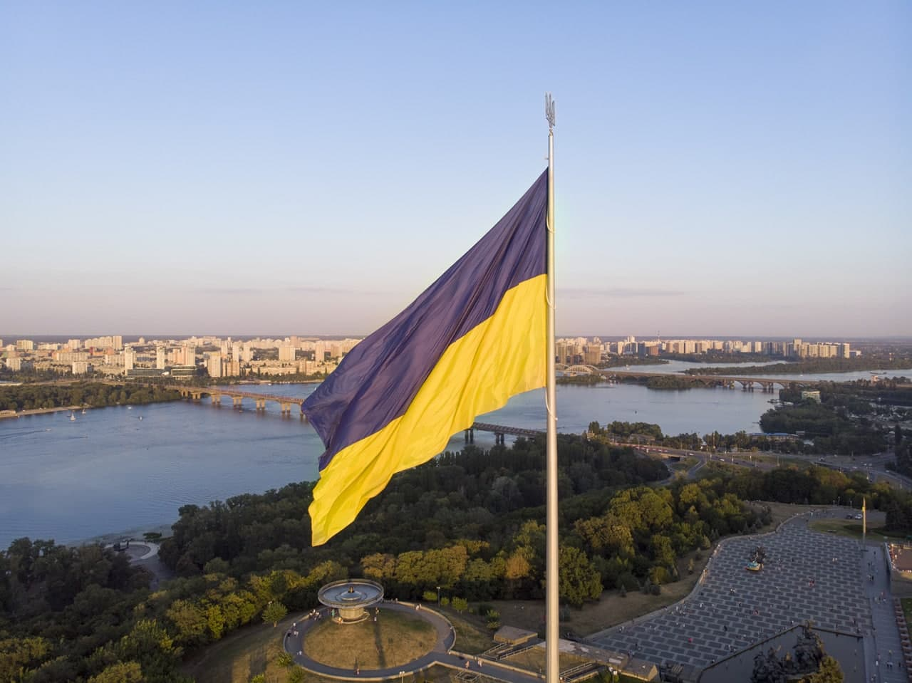
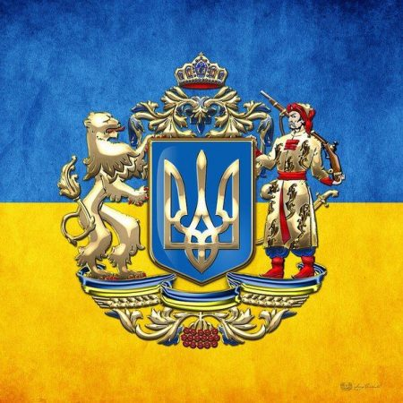
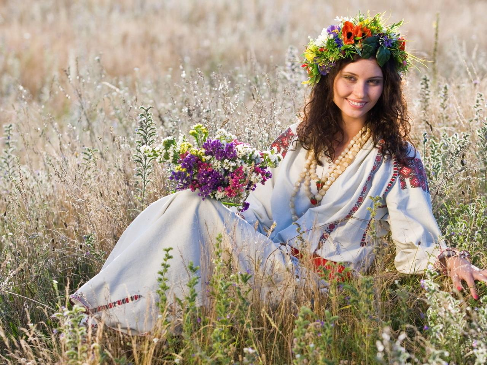
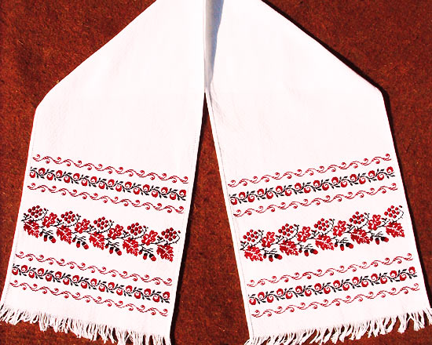
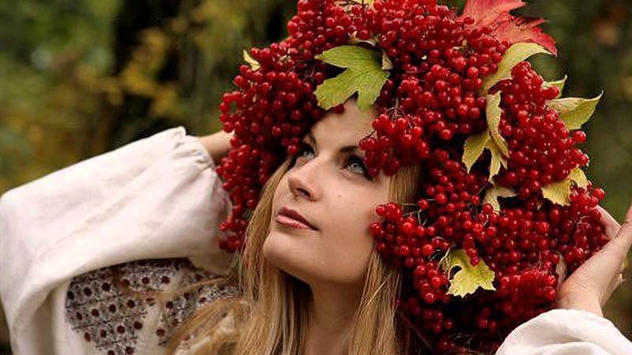

Прапор України
Держа́вний пра́пор Украї́ни — сучасний прапор України, стяг із двох рівновеликих горизонтальних смуг синього й жовтого кольорів. Співвідношення ширини прапора до його довжини 2:3.
Синій і жовтий (золотий) кольори використовувалися на гербі Королівства Руського XIV століття. Вони також уживалися на гербах руських земель, князів, шляхти й міст середньовіччя й раннього нового часу.
Сучасний синьо-жовтий прапор був уперше публічно зафіксований 25 червня 1848 року у Львові, який українці
Королівства Галичини й Володимирії вивісили над Львівською ратушею як національний прапор.
Саме після
цього випадку синьо-жовтий стяг набував усе більшої популярності в українців, а після революції 1905 року
його почали використовувати й у Наддніпрянській Україні.
За радянських часів синьо-жовтий стяг використовувався підпільно, його використання в СРСР каралося ув'язненням на два роки.
1991 року, після розвалу СРСР, цей прапор де-факто використовувався як державний стяг незалежної України.
вересня 1991 року Президія Верховної Ради України юридично закріпила за синьо-жовтим біколором статус
офіційного прапора країни. 23 серпня в Україні щорічно відзначають День державного прапора.
Герб України
Держа́вний герб України, або малий Державний Герб України — офіційний символ держави Україна у вигляді золотого тризуба на синьому щиті. Один із трьох державних символів України нарівні з прапором і гімном.
Тризуб був затверджений як малий герб України 19 лютого 1992 року постановою Верховної Ради разом із своїм графічним зображенням. У 1996 році його статус був закріплений у Статті 20 Конституції України, де він також згадується як «Знак Княжої Держави Володимира Великого».
Тризуб – це відголос історії нашої нації та символ боротьби за суверенітет нашої Держави. Кожен патріот та свідомий українець схиляє голову перед гербом своєї країни. Тим самим він схиляє голову перед своїми пращурами, які брали участь в розбудові нашої країни та відстоювали її самобутність і незалежність.
Гімн України
Державним гімном є пісня «Ще не вмерла України і Слава, і Воля»: слова Павла Чубинського, музика Михайла
Вербицького.
Офіційна музична редакція ухвалена Верховною Радою 15 січня 1992 року, текст гімну
затверджено Законом України «Про Державний Гімн України» 6 березня 2003 року.
26 лютого 2022 року Державне агентство України з питань мистецтв та мистецької освіти закликало музикантів включати в концертні програми та виконувати Державний гімн України в підтримку українського народу.
Вишиванка
Вишиванка — символ здоров'я, краси, щасливої долі, родової пам'яті, порядності, чесності,
любові, святковості;
оберіг.
Вишита національна жіноча та чоловіча біла сорочка. Символіка вишивки залежала від того, кому
призначалося вбрання: парубкові — нареченому, чоловікові, хлопцеві; дівчині, заміжній жінці.
Народ ставився до вишиванок як до святині. Вишиванки передавалися з покоління в покоління, з роду в рід,
береглися як реліквії.
Символічний образ сорочки-вишиванки часто зустрічається в народних піснях про
кохання, сімейне життя, а також соціально-побутових (козацьких, чумацьких, бурлацьких, наймитських та
ін.).
За традицією, дівчина, готуючи посаг, мала вишити своєму нареченому сорочку.
Вінок
Вінок — символ життя, долі, життєвої сили; символ дівоцтва. Вінок є також символом довершеності.
Звичай вінків існував в Україні ще в часи передісторичні, як атрибут сонячного культу весни, що відбилося
у
купальських піснях та весільних обрядах. Дівчина у вінку ототожнювалася із висхідним сонцем.
У повному українському вінку мало бути 12 квіток:
- деревій
- безсмертник
- любисток
- волошка
- ромашка
- цвіт вишні
- цвіт яблуні
- ружа
- мальва
- півонія
- мак
- хрещатий барвінок
Рушник
Смуга полотна сама по собі має насичене символічне значення — дороги, долі, захисту.
У всій Україні рушником накривали хліб на столі.
Коли син вирушав у далеку дорогу, мати дарувала йому
рушник.
Вишиваний рушник донині не втратив свого значення в побуті.
І тепер ним прикрашають
інтер'єри помешкань, вівтарі та ікони в церквах.
Калина
Калина — символ життя, крові, вогню. Деякі дослідники пов'язують її назву із сонцем, жаром, паланням.
Калина символізує материнство: кущ — сама мати; цвіт, ягідки — діти. Це також уособлення дому, батьків, усього рідного.
Калина уособлює й саму Україну. Як символ Батьківщини, вона «проросла» в гімнові січових стрільців:
Ой у лузі червона калина похилилася,Чогось наша славна Україна зажурилася,
А ми тую червону калину підіймемо.
А ми нашу славну Україну розвеселимо!